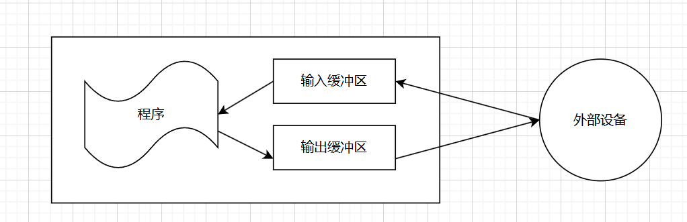
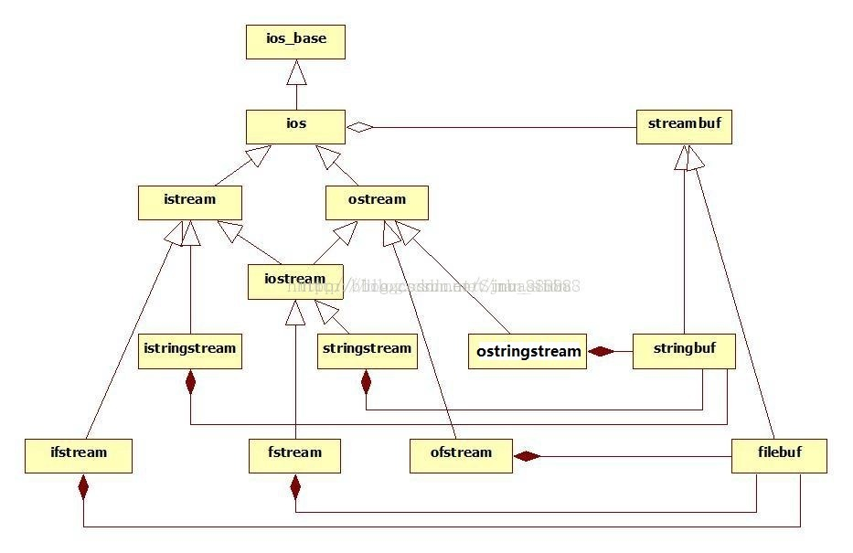

c++输入输出
学校对于这一节并没有教，当时看也只是模仿了上面的案例，不是很懂。现在在VoidMatrix的塔防教程中看到了这方面知识点相关，就想相对了解一下
std::fstream file(path);
if (!file.good())return false;
std::stringstream str_stream;
str_stream << file.rdbuf();
file.close();
cJSON* json_root = cJSON_Parse(str_stream.str().c_str());
主要弄明白这一段代码的意思。
C++的输入输出主要分为三大类：
- 基于控制台的输入和输出：从标准的输入设备（键盘）获得数据，把程序的执行结果输出到标准的输出设备（显示器）
- 基于文件的输入和输出：从外储存器文件获取数据或把数据存入外储存器的文件
- 基于字符串的输入和输出：从程序string类型的变量获取数据或把数据存于string类型的变量
这些输入和输出都是由c++标准库提供的。
流与标准库
输入流：输入操作中，字节从设备流向内存
输出流：输出操作中，字节从内存流向设备
C++的输入输出类主要包含在三个头文件中（注意输入输出是一个类，是一个可以实例化的对象）
- iostream：基于控制台的输入和输出
- fstream：基于文件的输入和输出
- sstream：基于字符串的输入和输出
- iostream（头文件）
- istream:控制台输入流类，他的对象代表一个输入设备
- ostream:控制台输出流类，他的对象代表一个输出设备
- iostream:控制台输入输出流类，他的对象代表一个输入或输出设备，这个类是由istream和ostream共同派生
- fstream（头文件）
- ifstream:输入文件流类，他的对象代表一个输入文件，由istream派生而来
- ofstream:输出文件流类，他的对象代表一个输出文件，由ostream派生而来
- fstream:输入输出文件流类，他的对象代表一个输入或输出文件，这个类是由iostream共同派生
- sstream（头文件）
- istringstream:输入字符串类，由istream派生而来
- ostringstrea:输出字符串类，由ostream派生而来
- stringstream:输入输出字符串类，由iostream派生而来
输入和输出缓冲
程序只能访问内存中的信息，而不能访问外部设备中的信息。
所以外部设备的信息会先存入内存再被程序访问，程序的输出也同样会放在内存再流向外部设备
内存中存放这些数据的区域被称为输入和输出缓冲区
以下几种情况会使缓冲区的内容被刷新
- 程序正常结束
- 缓冲区已满，再写入下一个值时会清空
- 用标准库的操作符，如endl
- 输入和输出流关联起来。在读入输出流时，会自动清空输入缓冲区。
缓冲对象主要分为三类：
streambuf
std::streambuf是基类，定义了输入输出的基本接口。std::stringbuf和std::filebuf是std::streambuf的派生类，提供了具体的字符串和文件缓冲区的实现。std::streambuf本身不能直接使用，需要通过其派生类（如std::stringbuf、std::filebuf）来进行实际的输入输出操作。
filebuf
std::filebuf是用于处理文件缓冲区的类，用于文件的读写操作。- 可以将
std::filebuf对象绑定到文件流上，与文件系统进行交互，实现文件数据的读写。- 可以设置文件打开模式、操作文件指针等文件操作相关功能。
stringbuf
std::stringbuf是用于处理字符串缓冲区的类，可以在内存中动态创建和修改字符串数据。- 是基于内存的字符串缓冲区，在内存中管理字符串数据。
- 主要用于处理字符串数据的输入输出操作，可以通过
std::stringstream方便地对字符串数据进行读写。
各个流对象以及缓冲的关系
- 对于所有的流对象，不难看出都是基于虚基类ios_base派生而来，不同的流对象用于不同的输入和输出。
- 而每一个流对象都有个专门的类去管理缓冲区对象，完全可以通过流对象.rdbuf()观察其返回值。主要就是iostream和stringstream和fstream三个各自管理缓冲的类。


基于文件的输入和输出
文件的概念
文件是驻留在外存储器上，具有一个标识名和一组信息的集合，用于永久保存数据。
与文件相关的概念：
- 数据项：数据的基本单位，表示一个有意义的信息，如一个整型数，一个字符串。
- 记录：若干个相关的数据项组成一个记录，每个记录可以堪称一个对象
- 文件：记录的集合
- 数据库：一组相关的文件。
例如图书管理系统中，数据库包含书目文件，读者文件和其他辅助文件。书目文件中的每本书的信息构成一条记录。
每条记录中的书名，作者都是数据项。
文件和流
对于c++来说，文件就是一个个字节序列构成，每一个文件以文件结束符（End Of File ，EOF）结束，这种文件称为流式文件。
可以与字符串进行类比，只不过字符串结尾是’\0’罢了
C++文件类型又分为二进制文件和ASCLL文件，对于ASCLL文件在读写时会在内存表示和文本之间进行转换。
二进制文件保存到则是数据在内存中的表示，直接交换数据，不执行任何转换。
访问文件主要有以下四个步骤
- 定义一个流文件对象
- 打开文件（将文件和流文件对象相关联）
- 操作文件的数据
- 关闭文件
1.定义文件流对象
C++有三个流文件类型：
ifstream:输入文件流，但程序从文件读入数据时，必须要定义一个ifstream类的对象与文件关联
0fstream:输出文件流，但程序输出数据到文件时，必须要定义一个ofstream类的对象与文件关联
fstream:输入输出文件流，fstream类的对象既可以读也可以写
ifstream infile；//定义了一个输入文件流对象
2.打开和关闭文件
文件流对象除了从istream和ostream继承下来的行为，还新增了俩个成员函数：open（打开文件），close（关闭文件），以及一个构造函数。
打开文件是将文件流对象与外存的某一文件关联起来，为文件的读写做好准备，例如：为文件流对象准备缓冲区，记录读写位置。
打开文件使用open函数（也可以定义流文件对象时通过构造函数）
open函数有俩个参数：
- 文件名（c语言风格的字符串）
- 文件的打开模式
inflie.open("文件名"，文件打开模式)；
| 文件打开模式 | 含义 |
|---|---|
| in | 打开文件，做读操作（只适用于ifstream和fstream类） |
| out | 打开文件，做写操作（只适用于ofstream和fstream类） |
| app | 在文件尾后面添加（只适用于ofstream和fstream类） |
| ate | 打开文件后，立即将文件定位在文件尾i（所有类都有用） |
| trunc | 打开文件后，清空文件（只适用于ofstream和fstream类） |
| binary | 以二进制模式进行输入和输入，默认为ASCLL文件 |
每个文件流类都有默认的打开方式（就是自己不传入第二个参数时）:
- ifstream：以in模式默认打开
- ofstream：以out模式打开
- fstream：以in|out（既可读也可写）模式打开
#include <fstream>
#include <ifstream>
#include <ofstream>
//打开一种是open函数，另一种就是申明的时候直接构造
ifstream infile1;
infile1.open("file1"); //或者infile.open("file1",ifstream::in);
ifstream infile2("file2"); //或者infile2("file2",ifstream::in);
ofstream outfile1;
outfile1.open("file1"); //或者outfile.open("file1",ifstream::out);
ofstream outfile2("file2"); //或者infile2("file2",ifstream::out);
//注意当用out打开文件的时候，会自动清空文件（要写入文件时）
outfile1.open("file1"，ofstream::app);//如果要要向file2添加数据，则需要app打开方式
//有时候既需要读也需要写，就选择fstream
fstream infile1("file1",fstream::in|fstream::out);
//fstream默认以in和out的方式打开，且这种情况下不会清空文件。
//如果只以out或者指定了truc模式，打开都会清空文件
TIPS：在打开文件后的操作，有一个良好的习惯就是检查文件是否打开成功。若打开成功，则流对象会是一个非零值，反之若未成功打开，则是一个零值。
//在项目中我们使用的是,fstream的函数good检查文件是否打开成功
file.good();
在读写操作完时有比要显式的关闭文件。
infile.close();
表示流对象与文件断开关系，不在读写数据。
补充：
其实流对象和文件的过程其实是缓冲对象与文件建立的过程，缓冲对象关联在流对象里(后面提到的打开模式in|out啥的，其实是针对filebuf)
所以下面的大体是可以看作一样的
#include <iostream>
#include <fstream>
int main() {
// 创建一个 std::filebuf 对象并打开文件
std::filebuf filebuf;
filebuf.open("example.txt", std::ios::out);
// 创建一个 std::fstream 对象并关联到 filebuf
std::fstream fstream;
fstream.rdbuf(&filebuf);
// 使用 fstream 写入数据到 filebuf 关联的文件
fstream << "Hello, World!";
// 关闭文件
filebuf.close();
return 0;
}
#include <iostream>
#include <fstream>
int main() {
std::fstream fstream;
fstream.open("example.txt");
fstream << "Hello, World!";
filebuf.close();
return 0;
}
3.fstream的读取和写入
对于文件的读取和写入应该是有很多方法的，不论是调用类内的函数，还是用外部getline（fstream，string）一行一行的读取或是其他，抑或是流操作符>>写入文件当前文件内指针指向的位置。日后有时间慢慢补，这里就只展示一段项目使用到的读取fstream吧
std::fstream file(path); //打开地图的csv文件
std::string str_line; //csv文件的getline都是按行读的
while (std::getline(file, str_line))//每次读取file的一行，写入string对象
{
......//一行一行读取csv文件，并且写入瓦片数据
}
基于字符串的输入输出
这里就只简单介绍stringstream类
std::stringstream 是 C++ 标准库中的一个类，它提供了一个方便的方式来处理字符串和流。主要用途包括以下几个方面：
将其他类型转换为字符串：
std::stringstream可以将基本数据类型（如int、double等）或自定义类型转换为字符串形式。通过输入流操作符<<将数据插入到std::stringstream中，当然也可以将可以从一个字符串中提取数据，并将其转换为其他类型。然后可以通过str()函数获取到整个字符串。这种功能对于将其他类型转换为字符串输出或者进行字符串拼接非常有用。#include <sstream> #include <iostream> #include <string> int main() { int num = 123; std::stringstream ss; ss << num; // 将整数放入流中（转化为字符串存入） std::string str = ss.str(); // 使用str()函数 从流中提取字符串 std::cout << str << std::endl; // 输出：123 //拼接 ss<<num; std::cout << ss.str() << std::endl; // 输出：123123 ss.str("");//清空 ss<<"246"; ss>>num; //自动将字符串转化为变量对应的类型写入变量 std::cout<<num;//输出123 }中间缓冲：std::stringstream 可以作为中间缓冲区来处理字符串数据。可以将不同的数据类型、格式化文本等按顺序插入到 std::stringstream 中，在最后一次性输出或处理整个字符串数据。这样可以更加灵活和高效地操作字符串内容。
字符串处理：通过 std::stringstream 的接口函数，可以对字符串进行各种操作，如插入、删除、替换等。这使得对字符串的处理更加方便和高效。
常用的读取方式
#include <iostream>
#include <sstream>
using namespace std;
int main()
{
stringstream ss("hello world");
string str;
// 注意： stringstream 是一个单词一个单词 ”流入“ string 的，就是以空格为停止
while (ss >> str)
{
cout << str << endl;
}
//这个和上面一样，以空格为分割字符不断读入（get和getline的读取之后也可以整理一下）
//注意分隔符是字符，不是字符串
while(getline(ss,str,' '))
{
cout<<str<<endl;
}
return 0;
}
/*
hello
world
*/
最后就分析一下项目代码
std::fstream file(path); //其实文件打开就是加载到缓存（内存中的一块地方）
if (!file.good())return false;
std::stringstream str_stream; //创建对应的流字符串来对文件的缓存的内容读入读出，string是不可以进行流操作的
str_stream << file.rdbuf(); //让对应的流字符串对象读取文件所有内容（rdbuf，其实就是readbuffer，读取缓存）
file.close(); //读取后文件关闭
cJSON* json_root = cJSON_Parse(str_stream.str().c_str()); //paese（解析），以cJSON去解析这些数据，参数是C语言风格的字符串。
以fstream对象打开文件
将file文件的内容写入stringstream对象
file.rdbuf();返回的是与文件关联的缓冲对象filebuf*(指针).
应该是stringstream有重载<<运算符(关于filebuf*),可以从filebuf关联的文件中读取所有内容进入stringstream对象
读取后关闭文件
将stringstream对象转换为string,再进一步转化为char* (c语言风格字符串),最后利用cJSON库将其转化为cJSON对象,之后就可以利用其指针json_root读取json文件格式了
总结:在我看来,在文件的格式的转化中,stringstream就相当于在转换中建立了桥梁,fstream帮忙打开文件,stringstream负责读取流文件的内容,最后再根据stringstream对象转换为string进一步char*,供cjson读取,成功获取了我们需要的json格式的内容.